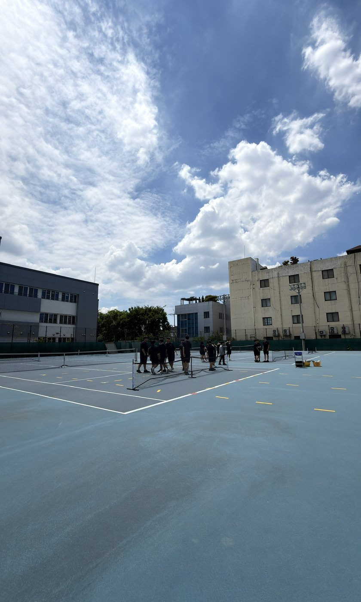

이 연수를 준비하며 가장 먼저 찾아온 것은 걱정이었다. 나는 이 자리에 설 만한 사람인가.
피클볼을 처음 본 건 2022년 무렵, 휴대폰으로 본 유튜브 영상에서였다. 미국에서 무섭게 번지고 있다는 뉴스가 뒤따랐다. 그때 든 생각은 '이거 쉽겠는데'였다. 테니스나 탁구보다 아이들이 쉽게 배울 수 있을 것 같았고, 소프트테니스의 단점도 메워 줄 것 같았다. 그래서 2023년 하반기, 구청 지원금으로 300만 원 정도의 장비를 샀다.
이듬해 나는 대구일중으로 옮겼다. 학교 바로 옆에서는 침산유치원 공사가 한창이라 운동장을 쓸 수 없었다. 체육교사 여섯이 강당 하나와 농구장 하나를 나눠 써야 했다.
나는 체육 수업에서 공간을 무엇보다 중요하게 여긴다. 그래서 눈에 들어온 곳이 테니스장이었다. 테니스부가 쓰던 곳이지만, 수업 시간에는 다른 반과 나누지 않고 쓸 수 있었다.
문제는 나였다. 테니스는 조금 치고, 탁구는 그럭저럭, 배드민턴은 겨우 가르칠 수 있는 정도. 학교에 매직테니스 장비가 있길래 그걸 해 볼까 했지만, 알아보니 유아들이 하는 운동이었다. 아이들에게 무엇을 가르칠 것인가. 아이들은 여기서 무엇을 배워 갈 것인가. 한참을 고민했다.
결국 전 학교에 전화를 걸었다. 피클볼 수업, 하실 겁니까. 수화기 너머에서 아무 대답이 없었다. 나는 1년만 빌려 달라고 했고, 장비를 몽땅 싣고 왔다.
2024년, 그 테니스장에서 첫 피클볼 수업이 시작됐다.
1965년 여름, 미국 시애틀 앞바다의 베인브리지 섬. 조엘 프리처드의 집 뒷마당에서 아이들이 심심하다고 보챘다. 어른들은 이웃 식구들까지 불러 배드민턴 코트로 나갔다. 그런데 셔틀콕이 없었다.
그들은 탁구 라켓을 들고 나왔고, 구멍 뚫린 플라스틱 공을 찾아냈다. 공이 아스팔트에서 생각보다 잘 튀자 네트를 아이들 허리 높이까지 내렸다. 피클볼은 그렇게, 있는 걸로 시작했다. 나도 전 학교에서 빌려 온 장비로 시작했으니, 출발이 닮았다.
그런데 아이와 어른이 같이 치는 경기에는 한 가지 문제가 생긴다. 잘하는 사람이 네트 바로 앞을 차지하고 발리하기 시작하면 상대는 공을 받아 내기가 어렵다.
피클볼에는 이걸 막아 놓은 독특한 공간이 있다. 키친, 네트 앞 약 2m 구역이다. 들어갈 수 없는 곳이 아니라, 그 안에서 바운드되지 않은 공을 칠 수 없는 곳이다. 발리를 하고 그 기세로 키친에 떨어지는 것도 안 된다.
서브도 제한되어 있다. 테니스처럼 강한 오버핸드 서브를 넣을 수 없다. 기본적으로 아래에서 올려 치는 서브를 해야 한다.
여기에 투바운스 규칙이 더해진다. 서브한 공도, 그 공을 리턴한 공도 한 번씩 바운드된 뒤에 쳐야 한다. 발리는 그다음부터 할 수 있다.
세 규칙을 나란히 놓으면 이 종목이 어떤 경기를 만들고 싶은지가 보인다. 강한 서브 한 방으로도, 네트로 바로 돌진해서도 경기를 끝내기 어렵다. 결국 공을 주고받아야 한다.
결국 잘하는 사람이 자기 기술만으로 경기를 독점하기 어렵게 만든 규칙들이다. 덕분에 상대적으로 기능이 낮은 사람도 랠리 안에 머물 가능성이 커진다.
나는 이게 학교 체육의 조건과 꽤 닮아 있다고 생각한다.
게다가 이 종목은 쉽다. 배드민턴이나 테니스를 조금 쳐 본 체육 선생님이라면 두 시간이면 경기까지 즐겁게 할 수 있다.
작은 코트와 쉬운 규칙 덕분에 피클볼은 빠르게 번졌다. 미국에서는 2020년 약 420만 명이던 피클볼 인구가 2025년 2,430만 명으로 늘었다. 베트남, 말레이시아 같은 동남아시아에서도 인기가 많다. 대구에서도 11월에 학생 피클볼 대회를 연다는 공문이 일찌감치 내려왔다. 내가 수업하던 3년 사이에 피클볼이 우리나라에서 이렇게 빠르게 성장할 줄은 몰랐다.
수업이 있는 날이면 나는 아이들보다 먼저 코트에 나간다. 새벽에 네트 여덟 개를 펴고 공을 바구니에 채운다. 피클볼 라인도 없는 코트에서 이게 제대로 된 수업인가 싶은 날도 있다. 그래도 종이 울리면 45분은 온전히 아이들이 치는 시간이어야 한다.
목표는 하나였다. 나에게 배운 아이는 경기를 즐길 수 있어야 한다. 서브를 넣고, 서브를 받아 넘기고, 키친 라인 뒤에서 발리를 할 수 있으면 된다. 백핸드가 서툴러도 경기는 할 수 있어야 하고, 규칙을 알고 자기 말로 설명할 수 있어야 한다. 돌아보면 배드민턴 수업과 크게 다르지 않다.
정말로 한 시간 내내 공만 튀겼다. 손등을 하늘로 향하고 튀기기, 손바닥을 위로 해서 튀기기, 라켓 양면을 번갈아 쓰기, 라켓 날로 치기. 70개 가까이 쳐 내는 아이가 나왔다. 3단계까지 서른 개, 쉰 개씩 치는 아이들에게는 공 세우기와 세운 공으로 라켓 면 돌리기까지 알려 주었다.
그러나 서른 명 가운데 여섯 명쯤, 20%의 아이들은 공 튀기기를 거의 하지 못했다. 협응이 아직 되지 않는 아이들이었다. 이 아이들 이야기는 평가에서 다시 꺼내려 한다.
좁은 공간을 정해 주고 주고받기만 했다. 나중에는 반 전체가 공 하나를 오래 이어 가는 놀이를 했다. 세게 보내면 아무도 못 받지만, 높이 띄워 주면 누군가 뛰어와 받는다. 아이들은 그걸 몸으로 먼저 알았다.
네트를 놓고 주고받기를 했다. 이때는 키친을 따지지 않는다. 네트를 넘기기만 하면 된다. 키친 규칙은 나중에 적용한다. 포핸드와 백핸드를 가르쳐 보려던 계획은 금세 접었다. 딩크샷까지 가르치고 싶었지만, 사실상 거기까지는 가지 못했다.
서브는 정해진 구역에 안정적으로 떨어뜨리면 된다. 말로는 쉽고, 쉬워야 맞다. 그런데 아이들에게는 그게 쉽지 않았다.
리턴 앤 발리는 투바운스 규칙을 수업으로 옮긴 활동이다. 투바운스 규칙 때문에 피클볼에서는 리턴한 쪽이 먼저 네트 앞에 설 수 있다. 그래서 리턴을 길게 치고 키친 라인까지 올라가라고 가르친다. 서브는 아이들이 받기 편한 포핸드 쪽으로 넣어 준다.
처음에는 서브를 잘 넣는 아이들이 나눠서 넣어 주었다. 그런데 야외 코트라 바람에 따라 서브가 쉬워지기도, 어려워지기도 했다. 그래서 작년부터는 모든 서브를 내가 넣는다. 한 반 서른한 명, 공 150개가 든 바구니, 열 바퀴. 한 시간에 1,500개가 넘는다. 덕분에 높이 띄운 공은 꽤 잘 치게 됐다.
평가 이야기는 조건부터 꺼내야 한다. 일주일에 한 시간, 한 반 서른한 명, 수업은 45분. 종이 울리자마자 시작해도 한 학생 앞에 서 있을 수 있는 시간은 1분 남짓이다.
2024년, 나는 경기 평가지를 만들었다. 공들여 만들었다. 한 학생마다 열두 항목을 상·중·하로 판정하는 체크리스트였다. 서른한 명이면 372번. 45분 안에 끝내려면 7초에 한 번씩 판정을 내려야 하는 종이였다.
그 종이를 들고 코트에 섰지만, 정작 경기를 할 시간이 없었다. 주 1시간으로는 수행평가를 치르는 것만도 숨이 찼다. 진도를 쫓기 바빴다.
서브가 들어가고 리턴이 되면 경기는 저절로 될 줄 알았다.
되지 않았다.
한참 뒤에야 알았다. 내 수업의 목표는 즐기는 것이었는데, 내가 만든 평가지는 경기력을 재고 있었다. 목표와 평가가 서로 다른 곳을 보고 있었다. 학생들에게는 내가 그어 둔 선까지 갈 길이 처음부터 없었다.
그래서 2026년에는 기준을 내렸다. 내가 생각하는 3.0 정도면 무조건 만점이다.
피클볼에서는 흔히 실력을 숫자로 이야기한다. 나는 그중 3.0 정도를, 동호회에 가서 처음 만난 사람과 규칙을 알고 한 게임을 즐길 수 있는 수준이라고 생각했다.
내 수업의 목표가 경기력이 아니라 향유라면, 만점 기준도 거기에 있어야 했다. 그래서 주고받기만 어느 정도 되면 80점을 받을 수 있게 했다.
계획서의 만점 문장에서는 백핸드와 딩크샷이라는 이름을 지웠다. 기술을 세는 대신 질문 하나만 남겼다. 경기가 되는가.
경기가 어려운 학생이 있는 조에는 내가 직접 상대로 들어간다. 서브, 딩크, 베이스라인 랠리 순으로 함께 쳐 보며 본다. 첫 시간에 공을 튀기지 못하던 그 20%의 학생들에게도 점수에 닿는 길 하나는 열려 있어야 했다.
이 기준이 옳다고 확신하는 건 아니다. 다만 2024년의 평가보다는 내가 세운 수업 목표에 가까워졌다고 생각한다. 이것이 올바른 평가인지는 아직 물음표로 남아 있다.
| 평가 | 배점 |
|---|---|
| 서브 | 20점 |
| 리턴 앤 발리 | 30점 |
| 경기 | 40점 |
| 서술형 | 10점 |
배점은 3년 동안 한 번도 바뀌지 않았다.
서술형 평가를 꼭 해야 하나, 나도 고민했다. 그래도 학생들과 글로 나눌 이야기가 분명히 있었다. 무엇보다 내게 배운 학생이 키친도 투바운스도 모른 채 "체육 시간에 피클볼 했어"라고만 말하는 게 싫었다.
올해 문항은 이런 장면에서 출발한다. 피클볼에서는 서브를 아무리 잘 넣어도 서브 한 방으로 점수가 나는 일이 거의 없다. 선수들은 네트 앞 구역에 함부로 들어가지 않는다. 그 장면을 만드는 규칙을 쓰라고 했다.
학생들이 쓴 문장 가운데 세 개를 옮긴다.
340장을 채점하는 일은 정말 힘들다. 그래도 이런 문장을 만나는 순간은 즐겁다. 학생들이 내 수업에서 무언가를 배웠다는 걸 확인하는 순간이기 때문이다.
나는 교육과정 전문가도, 수석교사도 아니다. 평가를 잘하고 싶은 교사라기보다 그저 수업을 잘하고 싶은 교사다. 내가 바라는 수업은 단순하다. 45분이 처음부터 끝까지 활동으로 꽉 차고, 학생들이 그 흐름을 놓치지 않고, 지난주와는 다른 무언가를 배워 가는 수업. 교육과정 문서를 펴 놓고 공부했고, 이론서도 찾아 읽었다. 그래도 내 수업에서 무엇을 바꿔야 할지는 잘 보이지 않았다. 그래서 유능한 수석 선생님을 찾아가 물었다.
"어떻게 하면 수업을 잘합니까?"
돌아온 답은 수업을 백워드로 설계해 보라는 것이었다. 그때 나는 이해중심 교육과정이 무엇인지도 몰랐다. 그냥 백워드로 설계해 보았다.
그렇게 하다 보니 2022 개정 교육과정의 역량과 성취수준에 얼추 닿는 수업이 되었다. 맞추려고 한 게 아니라, 하다 보니 맞았다는 쪽이 정직한 설명이다.
맞추지 못한 것도 하나 있다. [9체02-17]은 경기 기능을 '수행하고 향상한다'고 말한다. 그런데 '향상'을 평가할 방법을 나는 아직 찾지 못했다.
요즘 대구에서는 어디를 가도 IB 이야기다. 여기서 나까지 IB를 꺼내면 "또 IB야?" 하실 것 같다. 그래도 솔직히 말하면, 나는 해 보고 싶다.
IB를 이야기할 만큼 전문성은 없다. 다만 IB MYP 체육은 네 가지 기준으로 학생의 배움을 본다고 하니, 내 수업에 한번 대입해 보았다.
경기, 카드 한 장, 다시 경기.
어쩌면 이 고리가 내가 앞에서 찾지 못했다고 한 '향상'을 볼 수 있는 방법일지도 모르겠다. 처음 경기와 두 번째 경기가 달라졌는가. 학생이 자기 문제를 알고, 하나를 바꿔 보고, 실제 경기에서 다시 시도했는가.
내년에는 그걸 한번 보고 싶다.
처음에 자격 이야기를 했다. 3년이 지나 돌아보니, 내게 있었던 건 자격이 아니라 이 공간이었다.
이 공간에서 3년 동안 수업할 수 있어서 행복했다. 대단한 걸 했다기보다 주어진 공간을 그저 잘 썼다고 생각한다.
내 능력이 모자란 건지, 수업 시수가 적은 건지, 아이들이 많은 건지는 모르겠다. 다만 아이들의 배움은 아직 내 성에 차지 않는다.
이 공간을 계속 쓸 수 있다면 1학기와 2학기를 모두 피클볼로 채우고 싶다. 내년에는 3구 드롭과 3구 드라이브를 가르쳐 보고 싶다. 힘들겠지만…
성취기준이 말하는 경기 전략, 그걸 가르치는 법을
배우고 싶다.
본문에서 다 하지 못한 평가 이야기를 여기에 모았다.
평가 계획을 짤 때 나는 100점을 코트 위에 나눠 놓고 생각한다. 서브 20점은 베이스라인, 리턴 앤 발리 30점은 거기서 네트까지, 경기 40점은 코트 전체다. 서술형 10점은 코트에서 한 것을 자기 말로 정리하는 마지막 한 줄이다. 이렇게 놓고 보면 수업이 어디로 가야 하는지가 보인다.
한 학기 17차시는 이렇게 흐른다.
| 차시 | 수업 | 평가 |
|---|---|---|
| 1~2 | 친해지기 | |
| 3~7 | 네트 넘기기, 서브 | 8차시 서브 |
| 9~12 | 리턴 앤 발리 | 13차시 리턴 앤 발리 |
| 14~16 | 경기 | 경기하면서 경기평가 |
| 17 | 서술형 |
평가 주간은 따로 두지 않는다. 서브와 리턴 앤 발리는 배운 바로 다음 시간에, 경기는 경기를 하면서 평가한다.
이븐 코트와 오드 코트에서 각각 대각선 서비스 코트로 보내는지를 본다. 2026년 계획서에는 처음으로 '언더핸드'라는 낱말이 들어갔다.
계획서에는 '안정적으로', '정확하게' 같은 말로 수준을 적는다. 몇 개 중 몇 개라는 숫자는 쓰지 않는다. 그건 코트에서 학생 얼굴을 보며 끝까지 말로 알려 준다. 정식으로 시도하기 전에 학생의 서브를 먼저 보고, 지금 어디쯤 서 있는지, 다음 등급까지 무엇이 남았는지 일러 준다. 학생들은 이 평가가 친절하다고 한다. 다른 선생님들의 생각은 다를 수 있다.
투바운스 규칙을 알고, 리턴을 길게 보낸 뒤 네트로 붙는지를 본다. 이 평가 밑에는 질문이 하나 깔려 있다. 리턴을 길게 치는 것은 왜 단순한 기술이 아니라 전략적 선택일까.
만점 문장은 '경기 상황에 맞는 스트록과 전략을 정확히 판단하여 능숙하게 적용함'이 되었다. 기술 이름이 빠진 자리에 '판단'이 들어왔다.
마지막 17차시다. 시험 전에 학생들은 「피클볼 코트의 비밀」이라는 퀴즈로 OX와 사지선다를 풀며 규칙을 한 번 더 짚는다. 채점은 네 요소다. 넷을 다 쓰면 10점, 셋이면 8점, 둘이면 6점, 하나 이하면 4점이다. 올해는 AI 활용 기준도 세웠다. 실기에는 쓸 수 없고, 서술형은 자료를 찾는 데까지만 쓸 수 있으며, 답은 자기 손으로 쓴다.
이 모든 평가를 하나로 묶는 질문이 있다.
나는 공을 넘기는가,
경기를 만들어 가는가?
공을 넘기는 데서 멈추지 않고 경기를 만들어 가는 사람이 되는 것. 처음에 말한 '경기를 즐길 수 있어야 한다'는 목표는 결국 이 질문의 다른 이름이다.